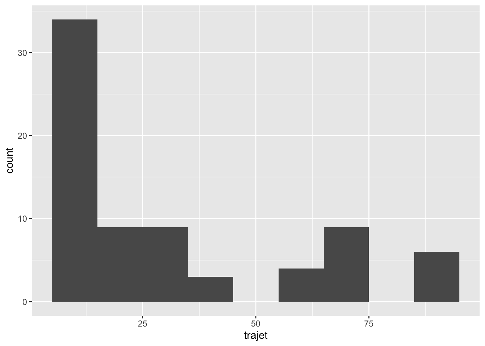
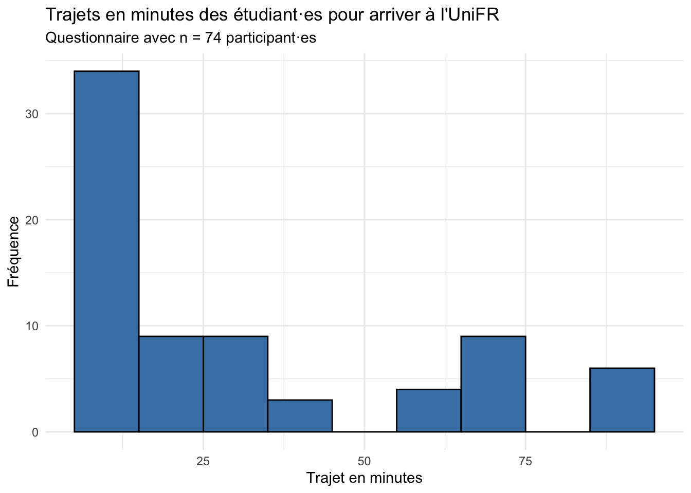
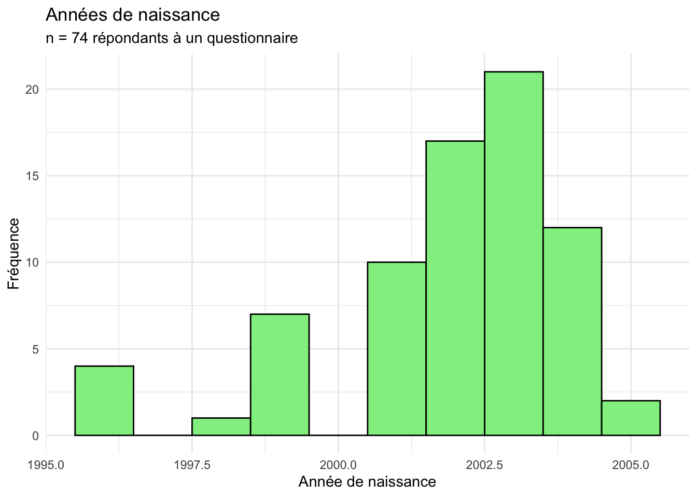
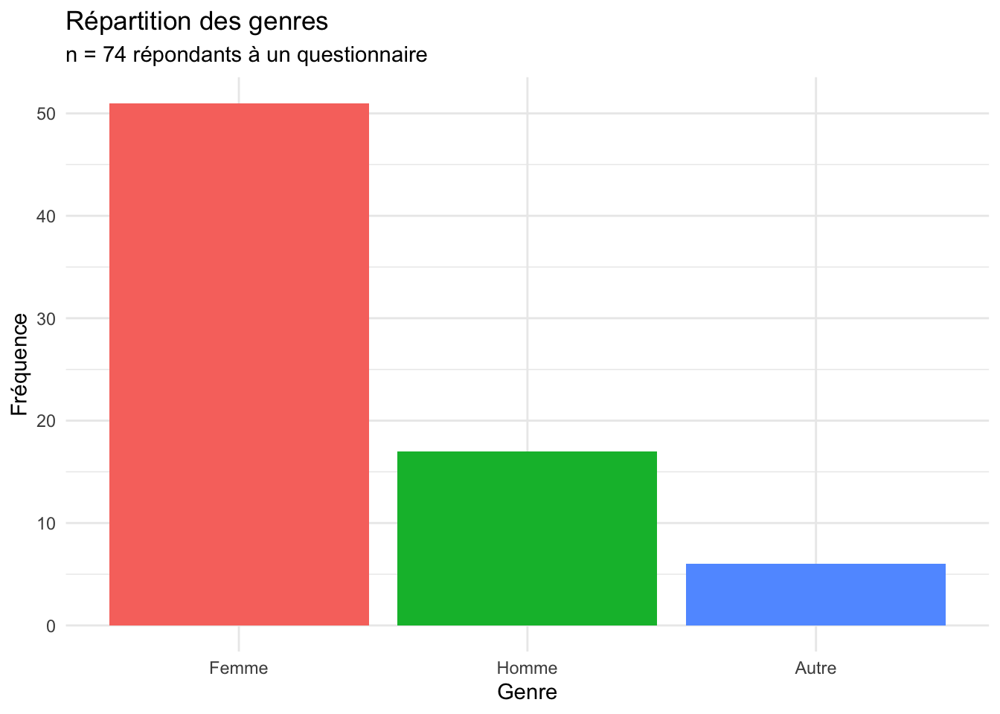
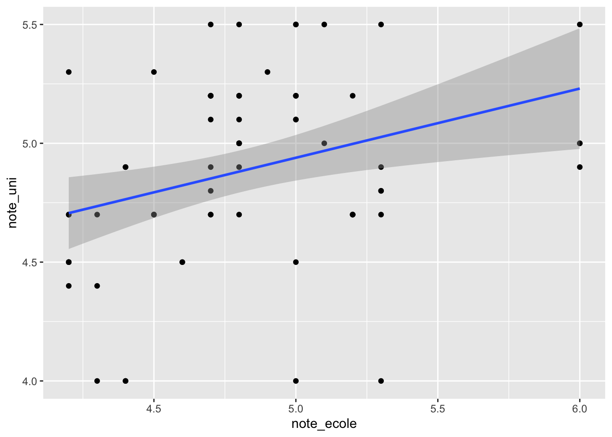
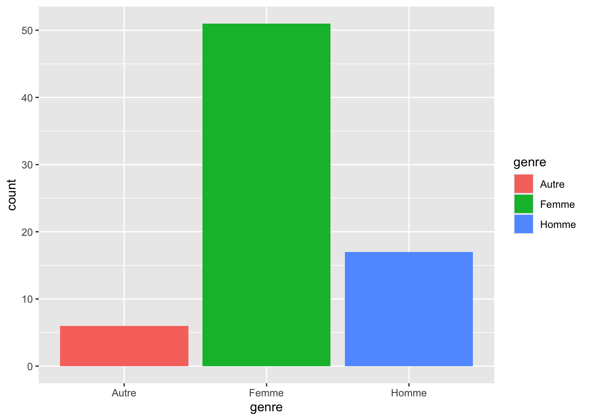

La statistique descriptive est généralement la première étape d’une analyse statistique. Elle aide à comprendre le jeu de données et ses caractéristiques à un niveau descriptif.
La statistique descriptive résume les données de l’échantillon. La statistique inférentielle permet ensuite de généraliser de l’échantillon à la population (avec une marge d’incertitude). Établir une relation de cause à effet demande en plus un dispositif adapté, par exemple une expérience randomisée.
Les mesures suivantes font souvent partie des statistiques descriptives (souvent appelés summary statistics en anglais) et sont utilisées pour une première analyse des variables de type numérique d’un jeu de données.
La taille de l’échantillon (nombre d’observations n)
Les mesures de tendance centrale (moyenne, médiane, mode)
Les mesures de dispersion (étendue, écart interquartile, variance, écart-type)
Les mesures de forme (asymétrie, kurtosis)
Les mesure de position (percentiles, quartiles)
Ces mesures permettent d’obtenir une première idée de la structure d’un jeu de données. Elles permettent également d’identifier des valeurs extrêmes (angl. outliers) qui peuvent jouer un rôle important dans un jeu de données.
Des mesures concernant les variables catégorielles peuvent également faire partie d’une analyse déscriptive, notamment :
La fréquence de chaque catégorie (p. ex. combien de participant·es à un questionnaire sont des femmes ?)
La répartition des différentes catégories (p. ex. quel est le pourcentage de femmes dans l’échantillon ?)
Dans la mise en œuvre d’une analyse statistique, par exemple dans un travail scientifique, les statistiques descriptives sont souvent présentées sous deux formats :
des tableaux pour les mesures telles que la taille de l’échantillon, les moyennes, etc. Souvent aussi pour différentes catégories, p. ex. hommes et femmes.
des graphiques pour la visualisation de distributions, par exemple des histogrammes, et des répartitions de variables catégorielles, par exemple par le biais de diagrammes à barres.
Lorsque l’on veut représenter des statistiques descriptives dans R, il est souvent utile de combiner les deux paquets R dplyr et ggplot2. C’est une bonne nouvelle, car nous avons déjà examiné les principaux codes R nécessaires pour utiliser ces deux paquets dans ce cours.
Pour nous entraîner à nouveau, cette fois avec nos propres données, nous allons procéder ci-dessous à une analyse descriptive des réponses au questionnaire rempli par les étudiant·es du cours !
NoteDonnées synthétiques
Le fichier reponses_socio.csv utilisé sur ce site est synthétique : ses données ont été simulées à partir du questionnaire d’une classe, et il ne contient aucune personne réelle. Il a les mêmes variables que le questionnaire, avec des distributions et des relations semblables. Pour protéger les participant·es, les valeurs rares ont été regroupées (p. ex. « Autre canton »). Les résultats ci-dessous peuvent donc différer de ceux présentés en cours.
Vous verrez donc par la suite comment ce que nous avons appris jusqu’à présent dans le cours peut être combiné de manière utile.
10.1 Analyse des réponses au questionnaire, 1re partie (stats descriptives)
Veuillez ouvrir un nouveau script R et charger les paquets tidyverse et ggthemes. Téléchargez ensuite le fichier reponses_socio.csv dans votre répertoire de travail, ou lisez-le directement depuis le site comme dans le code ci-dessous.
Si vous importez le fichier avec Import Dataset → From Text (base)…, utilisez les paramètres suivants :
── Attaching core tidyverse packages ──────────────────────── tidyverse 2.0.0 ──
✔ dplyr 1.2.1 ✔ readr 2.2.0
✔ forcats 1.0.1 ✔ stringr 1.6.0
✔ ggplot2 4.0.3 ✔ tibble 3.3.1
✔ lubridate 1.9.5 ✔ tidyr 1.3.2
✔ purrr 1.2.2
── Conflicts ────────────────────────────────────────── tidyverse_conflicts() ──
✖ dplyr::filter() masks stats::filter()
✖ dplyr::lag() masks stats::lag()
ℹ Use the conflicted package (<http://conflicted.r-lib.org/>) to force all conflicts to become errors
library(ggthemes)# vous devez modifier les fonctions setwd() et read.csv()# pour correspondre à votre ordinateur (ou lire le fichier# directement depuis le site du cours, comme ici) :# setwd('~/Documents/exercices_methodes_2')reponses_socio <-read.csv("https://julesaberlin.github.io/intro-a-R/data/reponses_socio.csv",encoding ="UTF-8", stringsAsFactors =TRUE)# Contrôle, si ça a marchéstr(reponses_socio)
# Une formidable fonction pour analyser les stats# déscriptives : summary()summary(reponses_socio)
naissance genre permis suisse origine
Min. :1996 Autre: 6 Non:21 Non:10 Autre continent: 8
1st Qu.:2001 Femme:51 Oui:52 Oui:64 Europe :66
Median :2002 Homme:17 NAs: 1
Mean :2002
3rd Qu.:2003
Max. :2005
fraterie domicile trajet note_ecole
Min. :0.000 Autre canton: 5 Min. : 5.00 Min. :4.200
1st Qu.:1.000 Berne : 3 1st Qu.:10.00 1st Qu.:4.500
Median :1.000 Fribourg :39 Median :20.00 Median :4.800
Mean :1.811 Genève : 3 Mean :31.89 Mean :4.811
3rd Qu.:2.000 Tessin : 4 3rd Qu.:56.25 3rd Qu.:5.000
Max. :5.000 Valais : 3 Max. :90.00 Max. :6.000
Vaud :17 NAs :4
note_uni
Min. :4.000
1st Qu.:4.700
Median :4.900
Mean :4.862
3rd Qu.:5.200
Max. :5.500
# Abordons maintenant quelques questions plus spécifiques# auxquelles nous pouvons répondre à l'aide de statistiques# descriptives# 1. Trajet pour arriver à l'université# *****************************************# histogramme très basiqueggplot(data = reponses_socio, mapping =aes(x = trajet)) +geom_histogram(binwidth =10)

# plus sophistiquéggplot(data = reponses_socio, mapping =aes(x = trajet)) +geom_histogram(binwidth =10,fill ="steelblue", color ="black") +labs(title ="Trajets en minutes des étudiant·es pour arriver à l'UniFR",subtitle ="Questionnaire avec n = 74 participant·es", x ="Trajet en minutes",y ="Fréquence") +theme_minimal()

# 2. histogramme des années de naissance# *****************************************ggplot(data = reponses_socio, mapping =aes(x = naissance)) +geom_histogram(binwidth =1, fill ="lightgreen", color ="black") +labs(title ="Années de naissance", subtitle ="n = 74 répondants à un questionnaire",x ="Année de naissance", y ="Fréquence") +theme_minimal()

# 3. diagramme à barres des genres# *****************************************ggplot(data = reponses_socio, mapping =aes(x = genre, fill = genre)) +geom_bar()
# graphique plus sophistiquée# changer d'abord l'ordre des catégories (commençant avec# la plus fréquente)ordre =c("Femme", "Homme", "Autre")# Puis combiner dplyr avec ggplot2 !reponses_socio %>%select(genre) %>%mutate(genre =factor(genre, levels = ordre)) %>%arrange(genre) %>%ggplot(aes(x = genre, fill = genre)) +geom_bar(show.legend =FALSE) +labs(title ="Répartition des genres", subtitle ="n = 74 répondants à un questionnaire",x ="Genre", y ="Fréquence", legend ="") +theme_minimal()
Ignoring unknown labels:
• legend : ""

# 4. Moyennes des notes# *****************************************mean(reponses_socio$note_ecole, na.rm =TRUE)
[1] 4.811429
mean(reponses_socio$note_uni, na.rm =TRUE)
[1] 4.862162
min(reponses_socio$note_uni, na.rm =TRUE)
[1] 4
min(reponses_socio$note_ecole, na.rm =TRUE)
[1] 4.2
# On exclut les réponses sans note (valeurs manquantes, NA)# ; sans ce filtre, mean() renverrait NA pour les groupes# concernésreponses_socio %>%select(note_ecole, note_uni, genre) %>%group_by(genre) %>%filter(!is.na(note_ecole), !is.na(note_uni)) %>%summarize(n =n(), note_ecole_moyenne =mean(note_ecole),note_uni_moyenne =mean(note_uni))
# A tibble: 3 × 4
genre n note_ecole_moyenne note_uni_moyenne
<fct> <int> <dbl> <dbl>
1 Autre 4 4.35 4.68
2 Femme 50 4.94 4.94
3 Homme 16 4.52 4.75
# Visualisation de la relation entre note_ecole et note_uni# (la note d'école vient avant la note à l'université :# elle va sur l'axe x)reponses_socio %>%select(note_ecole, note_uni) %>%filter(!is.na(note_ecole), !is.na(note_uni)) %>%ggplot(aes(x = note_ecole, y = note_uni)) +geom_point() +geom_smooth(method ="lm")
`geom_smooth()` using formula = 'y ~ x'

# 5. Permis de conduire# *****************************************table(reponses_socio$permis)
`summarise()` has regrouped the output.
ℹ Summaries were computed grouped by suisse and permis.
ℹ Output is grouped by suisse.
ℹ Use `summarise(.groups = "drop_last")` to silence this message.
ℹ Use `summarise(.by = c(suisse, permis))` for per-operation grouping
(`?dplyr::dplyr_by`) instead.
# A tibble: 4 × 3
# Groups: suisse [2]
suisse permis n
<fct> <fct> <int>
1 Non Non 2
2 Non Oui 8
3 Oui Non 19
4 Oui Oui 44
10.2 La fonction write.csv()
Avec R, vous ne pouvez pas seulement lire des données au format CSV (entrée de données ; avec des fonctions telles que read.csv()), mais vous pouvez également créer des fichiers CSV à partir de votre session en cours (sortie de données), notamment avec la fonction write.csv() !
La syntaxe de la fonction nécessite comme arguments le nom du data frame que vous voulez sauvegarder comme CSV ainsi que le chemin du fichier sur votre ordinateur qui inclut le nom que vous voulez donner au fichier CSV : write.csv(nom_df, "chemin_du_fichier/nom_du_ficher.csv")
# Voici un exemple avec du code (recréons le tableau avec# les animaux de Ice Age !)name <-c("Manny", "Sid", "Diego", "Ellie", "Peaches", "Scrat","Rudy", "Buck")species <-c("mammoth", "sloth", "sabertooth", "mammoth", "mammoth","squirrel", "dinosaur", "weasel")female <-c(FALSE, FALSE, FALSE, TRUE, TRUE, FALSE, FALSE, FALSE)age <-c(30, 20, 35, 25, 7, 4, 100, 28)weight <-c(5000, 80, 400, 4000, 1000, 1, 10000, 3)ice_age_df <-data.frame(name, species, female, age, weight)print(ice_age_df)
# Maintenant, notre but est de créer un ficher CSV qui# contient les données du data frame ice_age_df
# Il faut adapter le chemin du fichier suivant pour qu'il# marche sur votre ordinateur :write.csv(ice_age_df, file ="~/Documents/exercices_methodes_2/ice_age_df.csv")
Si tout a bien marché, vous devrez maintenant avoir un fichier CSV, nommé ice_age_df.csv dans votre répertoire de travail !
Exercices
Choisissez Vrai ou Faux, cochez une réponse ou tapez un nombre : la couleur indique tout de suite si votre réponse est correcte. Cliquez sur Explication pour voir la correction.
Question 10.1
Jugez chaque affirmation concernant les statistiques descriptives :
L’objectif des statistiques descriptives est principalement d’analyser les relations causales entre les variables.
La partie descriptive d’une analyse statistique fournit généralement des indications telles que la taille de l’échantillon (n), les fréquences des variables catégorielles et les moyennes des variables numériques.
Les tests d’hypothèse, par exemple avec un test t, sont une étape courante des statistiques descriptives.
Les statistiques descriptives précèdent souvent les statistiques inférentielles dans une analyse de données quantitatives en sciences sociales.
Certaines visualisations de données, comme les histogrammes, se prêtent bien à la présentation de statistiques descriptives.
Les statistiques descriptives résument les données de l’échantillon (effectifs, fréquences, moyennes, dispersion, graphiques). Les tests d’hypothèse et l’analyse de relations causales relèvent des statistiques inférentielles, qui viennent généralement ensuite.
Question 10.2
Jugez chaque proposition concernant l’histogramme suivant (source des données : questionnaire du cours) :

L’histogramme montre que le nombre de frères et sœurs (variable fraterie) suit une loi normale.
L’histogramme montre que la plupart des étudiant·es de la classe ont grandi dans des constellations familiales traditionnelles.
L’histogramme montre qu’il y a plus d’étudiant·es qui ont 3 frères et sœurs que d’étudiant·es qui sont enfants uniques.
La constellation la plus fréquente est celle des étudiant·es ayant un seul frère ou une seule sœur.
Une personne ayant participé au questionnaire a indiqué qu’elle avait 7 frères et sœurs.
a) Le nombre de frères et sœurs est une variable de comptage asymétrique, pas une loi normale.
b) Un histogramme du nombre de frères et sœurs ne dit rien sur la forme des familles.
c) 7 étudiant·es ont 3 frères et sœurs, contre 5 enfants uniques.
d) La barre la plus haute est celle d’un frère ou d’une sœur (33 étudiant·es).
e) Personne n’indique 7 frères et sœurs : le maximum est de 5. Vérifiez avec table(reponses_socio$fraterie).
Question 10.3
Importez le jeu de données reponses_socio.csv dans RStudio. Combien d’observations contient-il ?
Réponse :
nrow(reponses_socio) ou dim(reponses_socio) : le nombre de lignes correspond au nombre d’observations.
Question 10.4
Importez le jeu de données reponses_socio.csv dans RStudio. Combien de variables contient-il ?
Réponse :
ncol(reponses_socio) ou dim(reponses_socio) : le nombre de colonnes correspond au nombre de variables (naissance, genre, permis, suisse, origine, fraterie, domicile, trajet, note_ecole, note_uni).
Question 10.5
Importez le jeu de données reponses_socio.csv dans RStudio. Pour la variable genre : combien de femmes y a-t-il dans ce jeu de données ?
Réponse :
table(reponses_socio$genre) ou reponses_socio %>% count(genre).
Question 10.6
Importez le jeu de données reponses_socio.csv dans RStudio. Pour la variable genre : combien d’hommes y a-t-il dans ce jeu de données ?
Réponse :
table(reponses_socio$genre) ou reponses_socio %>% count(genre).
Question 10.7
Dans le jeu de données reponses_socio.csv, combien de minutes les étudiant·es possédant un passeport suisse mettent-ils en moyenne pour se rendre à l’université ? Arrondissez à la minute.
Pour suisse == "Oui", la moyenne vaut 33,52 minutes, soit 34 une fois arrondie.
Question 10.8
Dans le jeu de données reponses_socio.csv, quel genre a le trajet moyen le plus court pour se rendre à l’université ? (Tapez le genre exactement comme il figure dans les données.)
arrange() trie par ordre croissant : la première ligne, Homme (20,6 minutes), a le trajet moyen le plus court.
Question 10.9
En général, je peux enregistrer les données issues de ma session R sur mon ordinateur (par exemple, un data frame que j’ai créé) sous la forme de fichiers CSV.
La fonction write.csv() écrit un data frame dans un fichier CSV, p. ex. write.csv(ice_age_df, "ice_age_df.csv").
Question 10.10
Le code suivant fournit des statistiques descriptives du jeu de données mtcars :
data(mtcars)summary(mtcars)
summary() affiche pour chaque variable numérique le minimum, les quartiles, la médiane, la moyenne et le maximum.
Question 10.11
Dans le jeu de données reponses_socio.csv, en moyenne, les étudiant·es sans passeport suisse ont besoin de moins de temps pour se rendre à l’université que leurs camarades suisses.
Les étudiant·es sans passeport suisse mettent en moyenne 21,5 minutes, contre 33,5 pour les Suisses·ses. Attention : le groupe sans passeport suisse ne compte que 10 personnes. Pour savoir si une telle différence est due au hasard, il faudrait un test (session 11).
Question 10.12
Les statistiques descriptives révèlent souvent des informations et des tendances intéressantes dans les données, même avant l’application de statistiques inférentielles.
Effectifs, moyennes et graphiques montrent souvent déjà les principales tendances ; les statistiques inférentielles testent ensuite si elles se généralisent à la population.